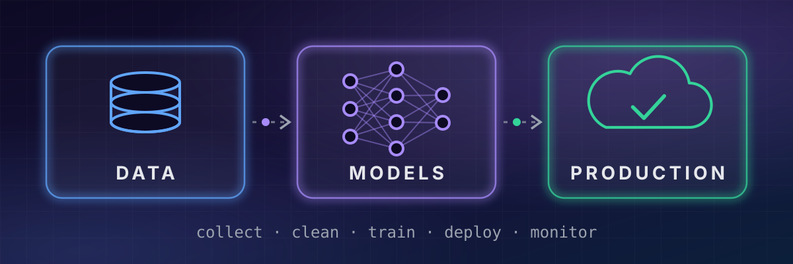
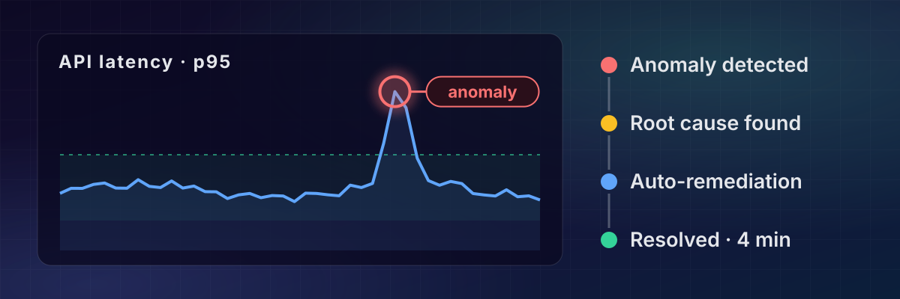

Based in Luxembourg — I help teams take AI from proof-of-concept to production.
About Me
🎤 Speaking at Voxxed Days Luxembourg 2025 — watch the talk
Hello! I'm Sitraka FORLER, a French Data & IT professional passionate about
building intelligent systems that create real-world impact. With expertise spanning Data Science,
Machine Learning, Cloud, and Cybersecurity, I help organizations unlock the value hidden in their
data.
Alongside my consulting career, I am the Co-Founder of LuxAIOps, a startup dedicated
to bringing intelligent IT Operations and automation to Luxembourg and Europe. I also take on
freelance projects — delivering tailored, production-ready solutions to clients.
How I can help

AI & LLMs in production — from POC to a monitored, secure service (RAG, NLP, forecasting).
Applied NLP (Hugging Face, Keras) to product descriptions.
Built predictive models and web traffic KPI dashboards.
December 2020 | France
👨💻 Ethical Hacker
Hack the Crisis France
Hackathon! 1 full week, non stop, during the Covid Crisis. Ideation,
Business Plan, Prototyping, Pitching and team working. 5th on 34 participating groups.
Engineered KPI Dashboards: Designed and deployed two interactive
TIBCO-Spotfire dashboards to monitor real-time production line performance indicators.
Scripted complex data processing logic using R, customized backend functionalities with
.NET, and structured the frontend user interface utilizing HTML.
Automated Reporting Pipelines: Developed an automated distribution
system to route critical service documents and KPIs directly to Industrial Engineers and
Plant Managers, streamlining communication and eliminating manual reporting overhead.
Predictive Maintenance Modeling: Spearheaded a data-driven project to
forecast production tool breakdowns. Leveraged Python and SQL to extract and analyze
historical machine data, identifying early indicators of equipment failure to optimize
production uptime.
Oct 2018 — Jun 2020 | Greater Marseille Metropolitan Area
💼 Consultant / Junior Data Analyst
Aix Marseille Strategy Consulting Group (AMS CG)
Implementation of data projects for clients: Data cleansing (Corsica Ferries, Nexity)
and Customer feedback analysis (PSA Group).
Implementation of a Gantt chart for a team of 20 stakeholders.
Performing analysis to assess quality and meaning of data.
Filter Data by reviewing reports and key performance indicators (KPI) to identify and
correct trends and threats.
Using statistical tools to identify, analyze, and interpret patterns and trends in
complex data sets that could be helpful for the diagnosis and prediction.
Preparing annual, quarterly and monthly financial projections for designated client
groups, explaining variances with the budget and financial forecasts.
Conduct business meetings with customers to determine requirements and milestones.
Ensure the quality of the delivery by conducting tests (including performance test),
troubleshooting and integrating new elements.
Skills: Microsoft Excel · Cybersecurity · Python · SQL
May 2019 — Jul 2019 | Région de Marseille, France
🔬 Research Assistant
Aix-Marseille School of Economics · Internship
The para-demographic productivity gap in the developing world: an international
comparison
During that internship I was under the supervision of Pr. Gilles Dufrenot at the
Aix-Marseille School of economics. We had to analyse the previous and actual point of
view of existing scientific papers, then we worked on the econometrics regressions and
interpretations.
Our paper investigates the heterogeneous productivity gaps by panel stochastic frontier
models to confirm a para demographic “burden” through inefficiencies in the labor
productivity in the developing countries. As a result, in terms of productivity,
Sub-Saharan Africa does not benefit from a demographic dividend.
Published in 2023 as a book chapter — Dufrénot, Mahaman, Sugimoto & Forler, see Publications.
📚 Publications
Book chapter — Dufrénot, G., Mahaman, H., Sugimoto, K. & Forler, S. (2023). “Productivity Gaps in the Developing World: An International Comparison”. In D. Avom & G. Dufrénot (eds.), Topical Issues in International Development and Economics, ch. 12, pp. 344–387, Cambridge Scholars Publishing. Listed on Google Scholar.
Python is the cornerstone of my data science and machine learning workflows. I specialize in building end-to-end ML pipelines, from data wrangling with pandas and NumPy to training predictive models. Using tools like Scikit-Learn and XGBoost, I focus on delivering models that bring actionable business value and optimize operations.
🧠 Deep Learning
Deep Learning allows me to solve complex perceptual problems such as NLP and Computer Vision. I leverage PyTorch, TensorFlow, and Hugging Face to develop, fine-tune, and deploy state-of-the-art neural networks. My recent experience includes deploying large language models (LLMs) into production environments and building retrieval-augmented generation (RAG) applications.
☁️ Cloud Architecture
Building scalable and robust backend systems is critical for modern data solutions. I design and implement cloud-native architectures on AWS and Azure, employing Infrastructure as Code (IaC) to ensure reproducible and secure deployments. This includes setting up CI/CD pipelines, container orchestration with Kubernetes, and adopting serverless architectures.
🗄️ SQL & NoSQL
A solid data layer is the foundation of any application. I have extensive experience modeling business requirements into both relational databases (like PostgreSQL and MySQL) and NoSQL datastores (like MongoDB and Cassandra). My expertise covers advanced querying, query optimization, dynamic indexing, and designing scalable data warehouses.
🔐 Cybersecurity
Security must be integrated from the ground up. I have hands-on experience using tools like Splunk and Venafi to implement proactive threat detection, manage certificates, and secure data in transit. My focus is on embedding security within the DevOps lifecycle (DevSecOps) to preempt vulnerabilities.
📈 FinTech & Quant
Applying mathematical and statistical methods to financial markets is a specialization of mine. I build models for risk assessment, algorithmic trading, and portfolio optimization. Leveraging real-time data ingestion and time-series analysis, I deliver insights that directly impact business strategy and financial outcomes.
LuxAIOps

Pioneering AIOps
(Artificial Intelligence for IT Operations) in Luxembourg and across Europe.
🚀 Our Vision
Modern IT infrastructure is becoming increasingly complex. At LuxAIOps, we believe
the solution is leveraging AI/ML to automate monitoring, detect anomalies before they cause
downtime, and streamline IT operations. We are building the next generation of intelligent tools for
enterprise resilience.
🛠️ Core Offerings
Predictive Analytics: Forecasting system failures and resource bottlenecks
before they impact the business.
Intelligent Automation: Automated root-cause analysis and self-healing systems.
Secure & Compliant AI: Solutions tailored to the strict regulatory
requirements of the European market (GDPR, DORA).
MLOps Consulting: Helping companies deploy and scale their own machine learning
models reliably.
Have a data, AI or MLOps project in Luxembourg or remotely? Tell me about it — I usually reply within 48 hours.
Prefer email? Write to sitraka.forler@gmail.com.